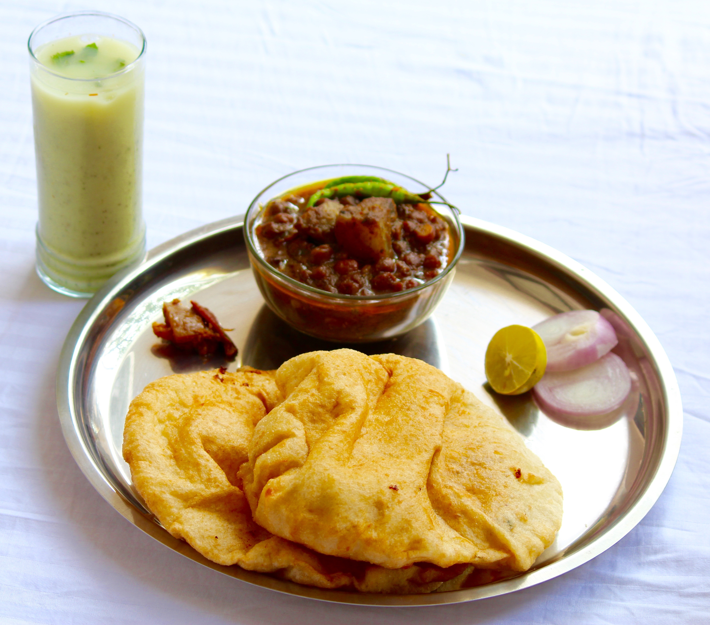

Home
Chole Bhature Recipe

Description
Making Chole Bhature at home is a two-part process: preparing the spicy chickpea curry (Chole) and the fluffy, deep-fried leavened bread (Bhature). This classic Punjabi dish is loved for its combination of tangy, rich gravy and soft, airy bread.
Ingredients
- Maida (Refined Flour): 2 cups
- Sooji (Semolina): 2 tbsp
- Curd (Dahi): ¼ cup
- Baking Soda: ¼ tsp
- Sugar: 1 tsp
- Oil: 1-2 tbsp
- Warm Water
- Chickpeas (Kabuli Chana): 1 cup, soaked overnight
- Whole Spices: 1 bay leaf, 1 black cardamom, 1-inch cinnamon stick
- Tea Bags: 1-2 (for that deep dark colour)
- Base: 1 finely chopped onion, 1 tsp ginger-garlic paste, and 1.5 cups tomato puree
- Spice Powders: 1 tsp red chilli powder, 1 tsp coriander powder, ½ tsp turmeric, and 2 tsp Chole Masala
- Tanginess: 1 tsp Amchur (dry mango powder) or tamarind paste
Steps
- Mix: Combine maida, sooji, sugar, salt, and baking soda. Add curd and oil, mixing well until crumbly.
- Knead: Gradually add warm water and knead into a smooth, soft dough for about 5-6 minutes.
- Rest: Grease the dough with oil, cover with a damp cloth, and let it rest for at least 2 hours (or more for better fluffiness).
- Fry: Divide the dough into small balls. Roll them into slightly thick circles or ovals. Deep fry in very hot oil, pressing gently with a slotted spoon until they puff up fully.
- Pressure Cook: Boil the soaked chickpeas with water, tea bags, salt, and a pinch of baking soda for 5-6 whistles until soft. Discard the tea bags.
- Sauté Masala: Heat oil in a pan. Add whole spices, then sauté onions and ginger-garlic paste until golden brown.
- Add Puree & Spices: Stir in the tomato puree and all spice powders. Cook until the oil begins to separate from the masala.
- Simmer: Add the boiled chickpeas (along with some cooking water). Mash a few chickpeas to thicken the gravy. Simmer for 10-15 minutes.
- Garnish: Top with fresh coriander, slit green chillies, and ginger juliennes.